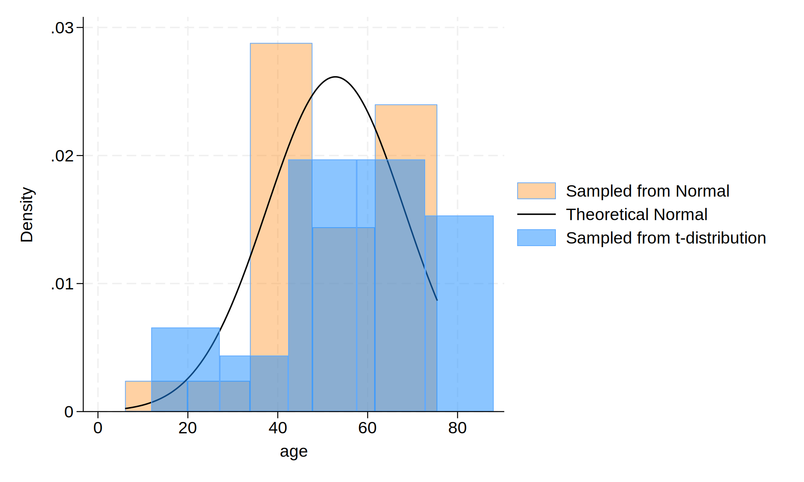

Background: This is the HW4 for Stata Intermediate class: How to embed Stata results in .html
Methods: We created a do-file then in it initialized our dataset with 30 observations. The next step involved simulating age from a normal distribution with a mean of 57 years and a standard deviation of 15. We then randomly generate age_t from a t-distribution with df=30. A histogram comparing the two simulated distributions of age were then constructed. Finally, we typed the following command into the Stata command window: dyndoc index.do, saving(index.html) replace to generate the html. All codes were done in STATA 18.0.
. clear
. // initialize dataset
. set seed 20240424
. set obs 30
. capture drop age age_t
. // variable generation
. gen age = (rnormal() * 15) + 57 // normal distribution
. gen age_t=(rt(_N)*15)+57 // t distribution
. //graphical representation
. hist age, ///
> fcolor(orange%40) /// simulated normal
> addplot(hist age_t, fcolor(midblue%50)) /// simulated t-distribution
> normal /// theoretical normal
> legend(on ///
> lab(1 "Sampled from Normal") ///
> lab(2 "Theoretical Normal") ///
> lab(3 "Sampled from t-distribution") ///
> )
.
. graph export hw4_intermediate.png, replace

The Simulated Dataset:
. display c(N)
30
. display c(k)
2
. list in 1/5
+---------------------+
| age age_t |
|---------------------|
1. | 39.90951 34.74397 |
2. | 69.11408 54.29286 |
3. | 43.09823 53.98543 |
4. | 50.53851 50.0417 |
5. | 6.033284 56.7036 |
+---------------------+
Results: We see that the observed age distribution generated from the normal distribution roughly matches the theoretical one: $ \text{Age, years} \sim \mathcal{N}(\mu = 57, \sigma^2 = 225) $
Footnote: The results are based on simulated data.